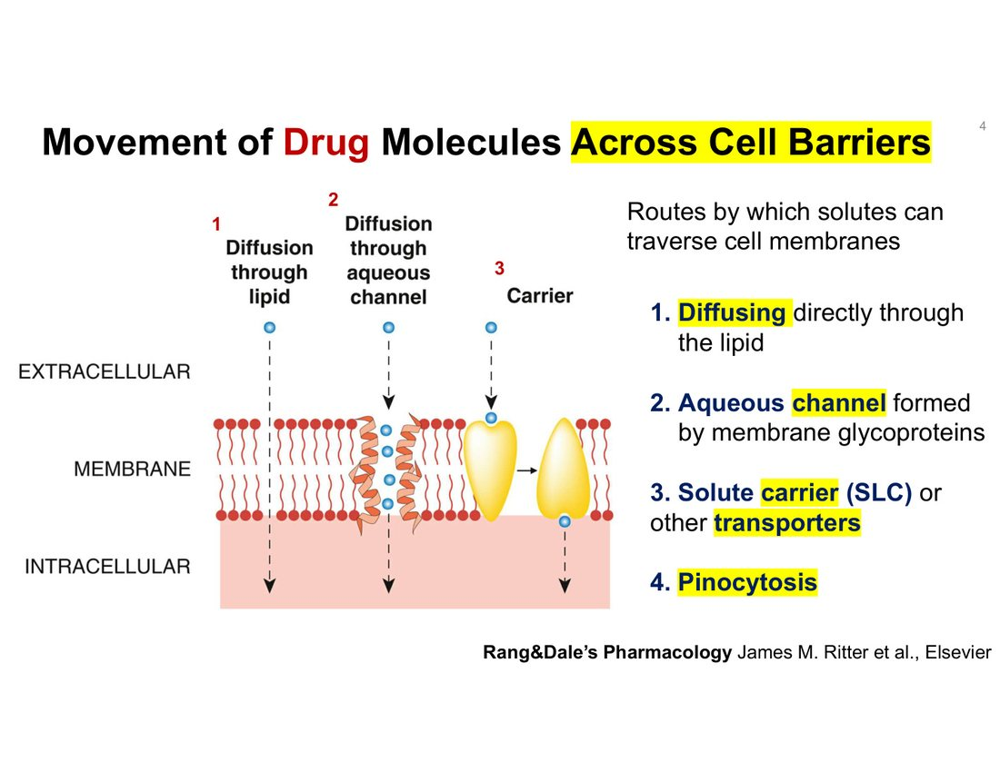
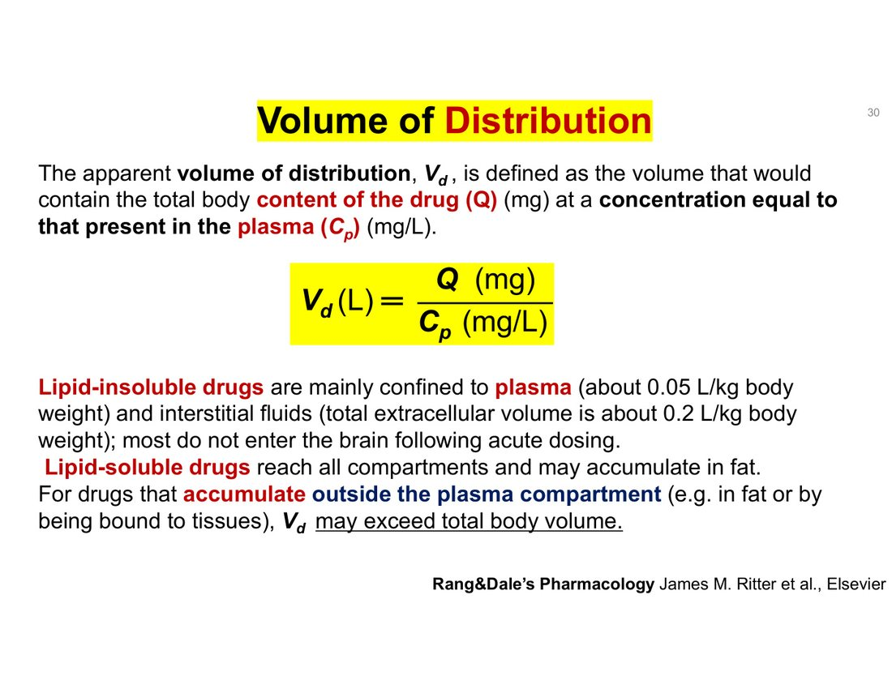
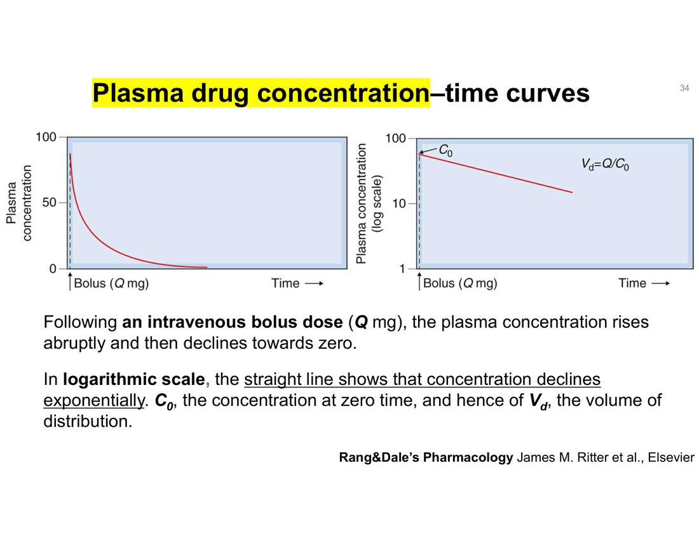

BIO105 · 第 10 章
药物吸收、代谢与药代动力学
Drug Absorption, Metabolism & Pharmacokinetics
虚线下划线为术语；悬停查看中文、英文与释义，完整词典见“术语”。
本章目录
本讲接续第 9 章的受体药理，转向“药物进入体内之后经历了什么”：跨膜途径与 pH 分配决定吸收，转运体与肝代谢决定分布和清除，而 Vd、清除率、半衰期与 AUC 把这趟旅程压缩成几个可测量的参数。
本章要点
- 药物跨膜有四条途径：直接穿过脂质、膜糖蛋白构成的水性通道、SLC/其他转运体、胞吞。
- 只有不带电的形式能自由穿过脂双层；弱酸弱碱的分布由两侧 pH 决定，由此产生 pH 分配与离子捕获。
- SLC 顺电化学梯度被动转运，ABC 是消耗 ATP 的主动泵；OCT2 摄取顺铂造成肾毒性，西咪替丁可竞争同一转运体。
- 弱酸与弱碱在肠道吸收良好，强酸与强碱吸收差；吸收随 pKa 变化。
- 血脑屏障是紧密连接的内皮细胞层加周细胞；炎症可破坏其完整性。
- 肝是主要代谢器官：P450 单加氧酶催化 I 相氧化，UDP-葡萄糖醛酸转移酶等催化 II 相结合，目的都是提高溶解度。
- Vd = Q/Cp 是表观分布容积，可超过总体液量；清除率 CLtot 是单位时间被清除药物所对应的血浆体积。
- 单室模型给出 Ct = C0e−kelt、t1/2 = 0.693/kel、AUC = C0/kel；二室模型多出一个快分布相。
10.1 药物跨膜的四个入口
讲义开篇列出溶质穿过细胞膜的四种方式（图取自 Rang & Dale's Pharmacology）：
- 直接穿过脂质扩散（diffusing directly through the lipid）；
- 由膜糖蛋白构成的水性通道（aqueous channel formed by membrane glycoproteins）；
- 溶质载体（solute carrier, SLC）或其他转运体；
- 胞吞（pinocytosis）。
第 4 条被单独展开。大多数真核细胞不断形成内吞小泡，这一过程称为胞吞pinocytosis，字面意思是“细胞喝水”（cell drinking）；此外，一些特化细胞含有专门通路，可按需摄取大颗粒，称为吞噬phagocytosis，即“细胞进食”（cell eating）。两者都是膜变形包裹，而不是单个分子穿膜。
讲义随后把示意图简化为两条主线：脂扩散与 SLC/其他转运体。对多数药物而言，正是这两条决定了吸收速度与分布范围；水性通道与胞吞只在特定分子、特定细胞上才重要。
脂扩散的要点是：非极性分子能自由溶于膜脂。讲义用一对药物对比——脂溶性高的药物 A 在膜两侧建立更大的跨膜浓度梯度 ΔCm，脂溶性低的药物 B 则较小；同样条件下 A 扩散更快。这里“脂溶性高”不等于“浓度高”，而是“更容易分配进膜内”，因此同样的血浆浓度能支撑更大的跨膜通量。

Clean vector cross-section of a lipid bilayer showing four labelled routes for solutes: direct diffusion through the lipid, an aqueous channel formed by membrane glycoproteins, a solute carrier transporter changing conformation, and a pinocytotic vesicle budding inward. Flat 2D, thin 1.5 px strokes, muted slate blue and warm grey palette, white background, English labels, no cartoon, no gradient, no shadow.
L11 p.4–7
10.2 pH 分配与离子捕获
弱酸与弱碱的跨膜行为取决于电离。讲义给出两个平衡：
关键规则只有一句：只有不带电的形式能扩散穿过脂膜。带电的 A− 与 BH+ 高度水溶，被脂双层挡住。于是当两个体液隔室之间存在 pH 差时，两侧的电离比例不同，平衡时的总浓度分布也随之改变——这就是pH 分配pH partition。
讲义用弱碱哌替啶（pethidine，又名 meperidine，pKa 8.6）作图，并在图中标注“高效吸收”（efficiently absorbed）。读这张图的逻辑是：能跨膜的是不带电的 B，带电的 BH+ 不能；pH 决定 B 与 BH+ 的比例，比例决定有多少药物能过膜。同一药物在不同 pH 的隔室中，平衡后的总浓度因此不同。
离子捕获ion trapping是同一规则的细胞内版本。脂溶性分子扩散进细胞后会被代谢，可能释放出一个在功能上重要的带电代谢物；带电产物无法穿膜返回，于是被“困”在细胞内，胞内浓度可以远高于胞外。
讲义的实例是 Fura 2-AM：它是 Fura 2 的乙酰氧甲基酯（acetoxymethyl ester）衍生物，能通过孵育方便地载入细胞。酯本身脂溶性足够，可穿膜进入胞质；进入后被胞内代谢，释放出带电荷的 Fura 2，后者不能穿膜，因而在细胞内积累——这正是离子捕获的实用版。
L11 p.8–10
10.3 载体转运：SLC、ABC 与顺铂的肾毒性
膜上转运体分两大类，讲义给出明确对照：
| 维度 | SLC（溶质载体） | ABC（ATP 结合盒） |
|---|---|---|
| 动力 | 顺电化学梯度，被动 | 水解 ATP，主动 |
| 方向 | 顺梯度易化扩散 | 可逆梯度泵出 |
| 讲义定位 | facilitate passive movement | active pumps fuelled by ATP |
人类估计有 300 多个基因编码这些转运体，多数主要作用于内源底物，但有一部分也转运外源化学物（xenobiotics），包括药物。在药物分布中，两个结构相关的 SLC 特别重要：有机阳离子转运体（organic cation transporters, OCTs）与有机阴离子转运体（organic anion transporters, OATs）。
顺铂（cisplatin）是讲义的核心例子。它是水溶性的平面配位化合物，中心一个铂原子，周围两个氯原子与两个氨基。进入细胞后 Cl− 解离，留下一个反应性络合物；该络合物先与水反应，再与 DNA 作用，使 DNA 双链弯曲（bent DNA），并结合 HMG 蛋白（high mobility group DNA-binding family），最终走向凋亡。
它怎样进入细胞？靠转运体。讲义指出人 OCT2 介导顺铂的肾毒性：OCT2 在肾表达，而 OCT1 在肝表达；图中比较了顺铂、卡铂与奥沙利铂对转运活性的影响。肾小管上皮高表达 OCT2，顺铂因此被主动摄入肾细胞，毒性集中在该器官。
讲义再给一个竞争实验：西咪替丁（cimetidine）与顺铂竞争同一 OCT2，从而保护细胞、减少凋亡。西咪替丁本身是组胺类似物，竞争性抑制组胺与 H2 受体结合。这个例子说明，转运体层面的底物竞争可以直接改变药物的器官毒性。
L11 p.11–16
10.4 给药途径、肠道吸收与 pKa
讲义用一张总览图给出药物的主要给药与消除途径，随后把本讲的重点收在肠道吸收、肝代谢与清除率三处。
肠道吸收的结构基础是小肠绒毛（villus）与胃肠上皮细胞。药物从肠腔进入血液，必须穿过上皮细胞；对弱酸与弱碱而言，限速的一步往往就是“有多少不带电形式”。
讲义给出吸收随 pKa 变化的曲线，结论是：弱酸与弱碱吸收良好，强酸与强碱吸收差。原因仍在电离——强酸几乎完全以 A− 存在，强碱几乎完全以 BH+ 存在，两者都缺少能穿膜的分子；弱酸与弱碱在体液中同时存在带电与不带电两种形式，不带电的那部分负责跨膜。
这条规律的适用范围要看清：它建立在“只有不带电形式能被动穿膜”之上。若某药的吸收主要依赖转运体，机制就不再是 pKa 曲线所能描述的那一套。
L11 p.17–19
10.5 血脑屏障
结构上，血脑屏障blood–brain barrier（BBB）是连续的内皮细胞层，细胞之间以紧密连接（tight junction）相连，外面由周细胞（pericytes）包围，附近还有星形胶质细胞（astrocyte）与神经元。紧密连接封住了细胞旁路，药物只能走跨细胞途径，因而亲水分子很难从血液进入脑组织。
功能证据来自硫霉素（thienamycin）实验：静脉给药 25 mg/kg 后，正常兔的脑脊液（CSF）中检测不到药物；而实验性大肠杆菌（E. coli）脑膜炎动物，CSF 浓度接近血浆浓度。同一药物、同一剂量，差别只在屏障是否完整。
讲义由此给出结论：血脑屏障由紧密连接的内皮细胞与周细胞构成连续屏障，而炎症可以破坏其完整性（inflammation can disrupt the integrity of the BBB）。这解释了为什么脑膜炎时抗菌药能进入 CSF，而正常时不能。
这条结论与下一节的分布参数呼应：脂不溶性药物在急性给药后大多不进入脑，因此其分布主要限于血浆与组织间液，Vd 也相应较小。
L11 p.20–22
10.6 肝代谢与 P450 单加氧酶
药物主要在肝代谢。口服药物经肠吸收后先进入门静脉（portal vein），被送到肝——这是“首过”位置的解剖基础；讲义用一张标出门静脉、脾与“来自口服的药物”的图提示这条路径。
代谢分两相：I 相以 P450 单加氧酶为代表，II 相以结合反应为代表，图上标出 UDP-葡萄糖醛酸转移酶（UDP-glucuronyl transferase）。总结页把目的说得很清楚：两相反应都是为提高药物溶解度（to increase drug solubility），以便排出体外。
P450 系统的性质：细胞色素 P450 酶是自然界最通用的保护性生物催化剂（the most versatile protective biocatalysts in nature），催化大量药物反应；它们是血红素蛋白（haem proteins），构成一个相关的超家族，每个成员以 CYP 加一组数字与一个字母命名。
催化循环分四步：
- P450 与药物分子 DH 结合，并从 NADPH–P450 还原酶接受一个电子，把铁还原为 Fe2+；
- 与 O2、H+ 及一个电子结合，形成 Fe2+OOH–DH；
- 再结合一个 H+，生成水与高价铁氧物种（FeO）3+–DH；
- 释放氧化产物 DOH，P450 再生。
这张循环图点明一个常被忽略的事实：P450 不是“消耗药物”的酶，而是把氧原子装进底物的氧化酶——它让药物变得更极性，从而更容易被 II 相反应接上水溶性基团并排出。
L11 p.23–26
10.7 药代动力学的定义、分布与 Vd
药代动力学pharmacokinetics（PK）是药理学中确定进入活体的化学物质命运的分支，一句话概括是“what the body does to the drug”（机体对药物做了什么）。与之相对，药效动力学（pharmacodynamic）在 1890 年就有词典条目，释义是“relating to the powers or effects of drugs”。
历史条件值得注意：PK 研究要到 20 世纪后半叶才成为可能，因为需要灵敏、特异、准确的物理化学分析技术来测生物体液中的药物浓度，尤其是高效液相色谱（HPLC）与质谱（mass spectrometry）；此后，“in silico”计算机建模越来越重要。
分布方面，体液分为若干隔室（讲义以占体重的百分比表示）。药物在每个隔室中都以结合型（bound）与游离型（free）两种形式存在，但只有游离药物能在隔室之间移动。
表观分布容积apparent volume of distribution Vd 定义为：能容纳全身体药量 Q（mg）、且浓度等于血浆浓度 Cp（mg/L）的那个体积。
代入一组数：Q = 1 g = 1000 mg，Cp = 20 mg/L，则 Vd = 1000/20 = 50 L。
数值的含义：脂不溶性药物主要局限在血浆（约 0.05 L/kg 体重）与组织间液（细胞外液总量约 0.2 L/kg），急性给药后大多不进入脑；脂溶性药物能到达所有隔室，并可能在脂肪中蓄积。若药物在血浆之外蓄积（进入脂肪或与组织结合），Vd 可以超过总体水体积。
因此 Vd 是“分布广度”的指标：Vd 大（如 50 L）说明药物大量离开血浆进入组织；Vd 小（如 3 L）说明它主要留在血浆。讲义据此提问：Vd = 50 与 Vd = 3 的两个药，哪个在组织中分布得好——是前者。

L11 p.28–31
10.8 清除率、单室模型与 AUC
消除速率与血浆浓度成正比：
总清除率 CLtot 是描述消除的基本 PK 参数，定义为：单位时间内从体内清除的药物总量所对应的血浆体积；单位是体积/时间，如 mL/min 或 L/h。它不是一个“量”，而是一个“体积流率”。
测定方法是恒速静脉输注 X（mg/h），间隔测血浆浓度，直到接近稳态。稳态时输入速率等于消除速率：
血药浓度–时间曲线：静脉推注（intravenous bolus）后浓度骤升，随后向零衰减。在对数坐标下这条曲线是直线，说明浓度按指数衰减；外推到 t = 0 得到 C0，再由 C0 与剂量得到 Vd。
单室模型single-compartment model把人体简化为一个体积为 Vd、充分搅拌的隔室：药物快速静脉注入，随后被代谢或排泄移除。
kel 是消除速率常数，单位是 1/时间。半衰期由它决定：
取常用对数，指数衰减变成直线：
讲义用两个只差 kel 的药物 a、b 演示：线性坐标下两者都是指数下降，对数坐标下是两条斜率不同的直线；斜率越陡，kel 越大，半衰期越短。
AUC0–∞ 是推注后 Cp–t 曲线下的总面积。把消除速率对时间积分，得到给药量：
于是只要知道剂量与曲线下面积，就能得到总清除率：CLtot = Q/AUC0–∞。若浓度按指数衰减，AUC 还能直接由 C0 与 kel 算出：
推导只用一次积分：∫0∞ C0e−keltdt，上限处 e−kelt → 0，下限处为 1，故积分值为 C0/kel。同时，kel 可由 ln Cp 对 t 的直线斜率取负得到。

Clean vector two-panel figure of plasma drug concentration against time after an intravenous bolus: left panel a single exponential decay on a logarithmic axis drawn as a straight line with intercept C0 and slope minus kel; right panel a two-compartment curve with a fast distribution phase labelled alpha followed by a slower terminal phase labelled beta. Flat 2D, thin 1.5 px strokes, muted slate blue and warm grey palette, white background, English labels, no cartoon, no gradient, no shadow.
L11 p.32–40
10.9 二室模型与全讲总结
单室模型假设药物瞬间混匀，但真实机体有血浆与组织两部分。二室模型two-compartment model加入一个外周隔室（peripheral compartment）；药物只能经由中央隔室（central compartment，通常代表血浆）进出外周。
数学后果是浓度–时间曲线多出一个指数项：
曲线因此呈两相：快相是分布相（药物从中央进入外周，速率常数 α），慢相是消除相（β）。讲义的原话是：加入第二个隔室的效果，是在预测的时间过程中引入第二个指数成分，使它包含一个快相与一个慢相。
A1、A2 是两个隔室的药量，V1 是中央隔室体积；k12 是中央到外周的速率常数，k21 是外周回中央，k10 是中央的不可逆消除。
| 维度 | 单室 | 二室 |
|---|---|---|
| 曲线 | 单一指数衰减 | 两个指数：快相 + 慢相 |
| 隔室 | 一个充分搅拌的体积 Vd | 中央 + 外周，经中央相通 |
| 参数 | Vd、kel | V1、k10、k12、k21、α、β |
| 典型解释 | 瞬间混匀，随后消除 | 先分布，后消除 |
讲义用五条总结收束全讲：药物靠脂扩散、转运体或胞吞跨膜，只有不带电形式容易扩散；SLC/ABC 影响分布，OCT2 摄取解释顺铂肾毒性；肝执行 I 相（P450）与 II 相代谢以提高溶解度；关键 PK 参数是 Vd = Q/Cp、t½ = 0.693/kel 与 AUC；单室模型给单一指数衰减，二室模型给“快分布 + 慢消除”。
L11 p.41–43